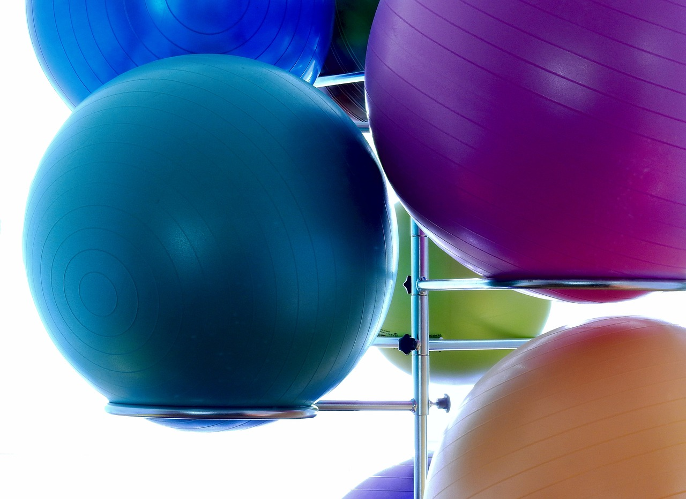

Welcome to my website! I am delighted that you have found your way to me! My name is Janine Ebenböck, born and raised in the Black Forest, and since 2024 I have been living in the Taunus near Frankfurt. Sport has been with me since I was a child - from martial arts and weight training to gymnastics,
yoga, snowboarding and scuba diving. As a result, I got to know the body and its functions at an early age and became curious to understand the connections and mechanisms.
People and their health are particularly close to my heart. For this reason, I decided to train as a physiotherapist straight after graduating from high school and completing my voluntary social year. Since graduating, I have completed numerous further training courses, which I list in detail below.
With my experience and passion, I can help you to relieve pain, improve your mobility, increase your well-being, get back on top of your everyday life and improve your quality of life.
Whether you suffer from acute or chronic complaints, want to take preventative action, have suffered an injury or have had an operation - in my practice, I will support you with individually tailored therapeutic approaches. I look forward to accompanying you on your way to a better quality of life!
- Manual lymph drainage / complex physical decongesting therapy
- Equipment-supported physiotherapy
- Nordic walking instructor
- Fitness trainer C license
- Manual therapy level 1 and 2 A Maitland concept DVMT e.V.
- Understanding fascia - treating fascia
- Trigger point therapy IMTT module 1: trunk, neck and shoulder muscles
- Reflex zone therapy
- Visceral Automobilization
- Sympathetic therapy according to Dr. Heesch
- Osteopathy (in training)


Review links to Google review page